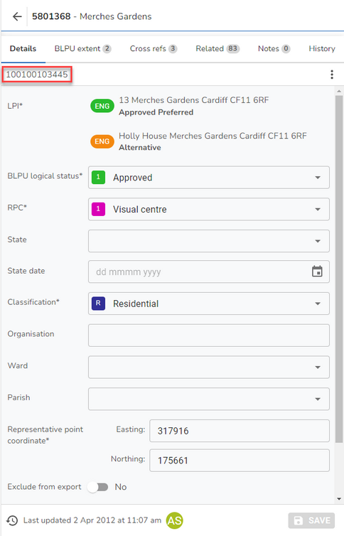

Property Form |
Top Previous Next |
|
The Property form is where you can find all of the details relating to a property. Graphical information is represented on the map and is automatically generated from the information held in the iManage Gazetteer database. For a list of all the available actions on the Property form please see the Property Form Actions topic. The UPRN (Unique Property Reference Number) for the property is displayed at the top of the form (outlined in red below).  The details of a property are split into different record types which are displayed under the different tabs across the top of the form. Beside each of the tabs there is a number which denotes the number of records. For a description of all the fields for each record type on the Property form please see the Property Form Details topic. At the bottom of the form you will see the date and time that the record was last updated together with the initial(s) of the user that made the change. Note: Please click on one of the following links if you wish to understand more about the Related and History tabs. See Also |